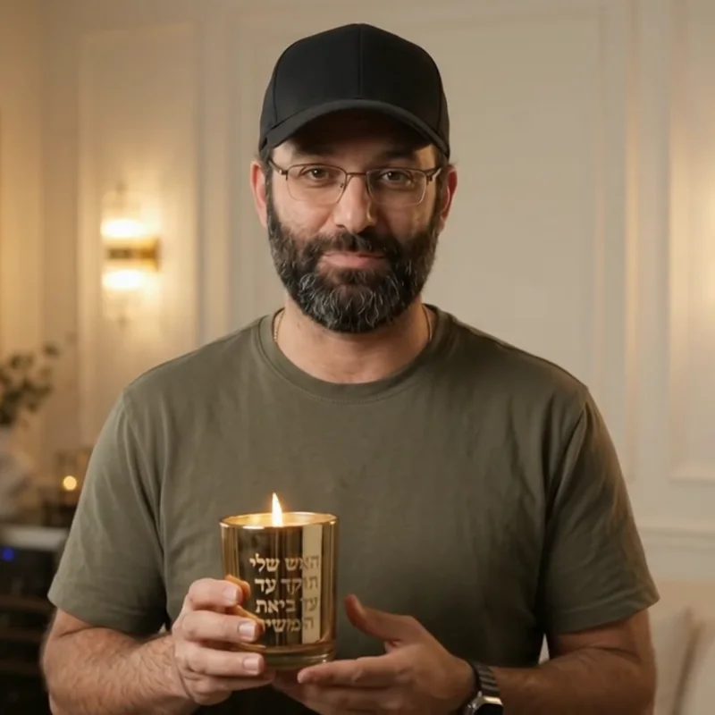
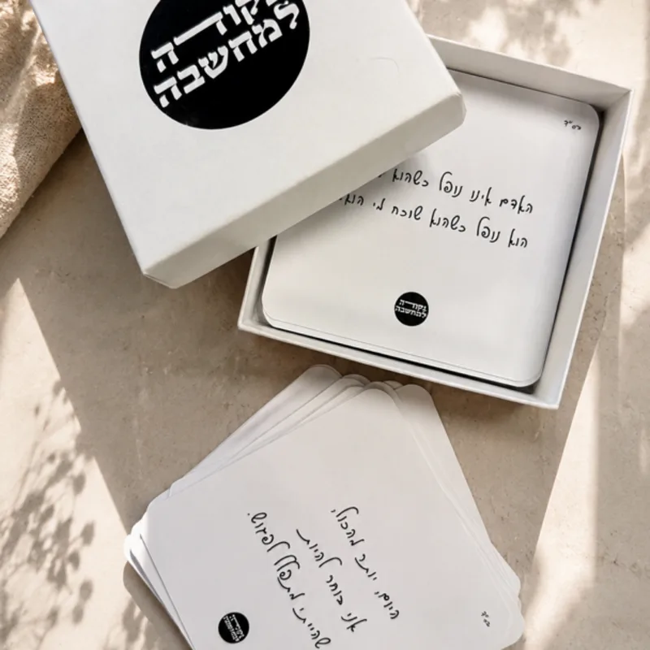
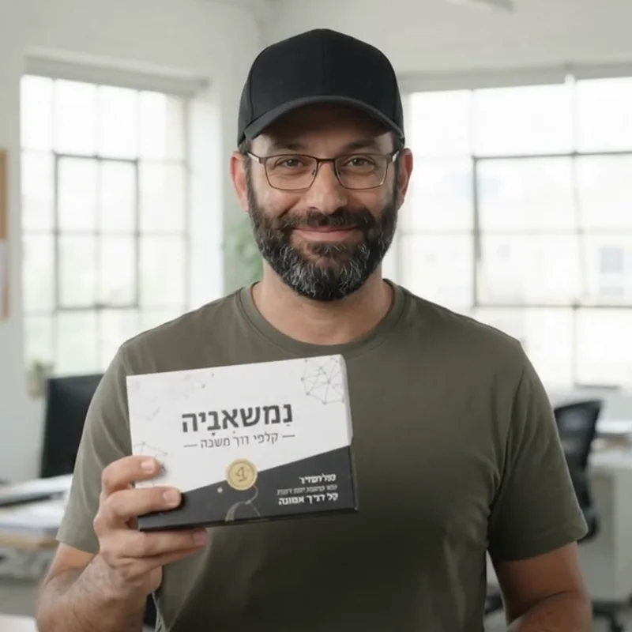
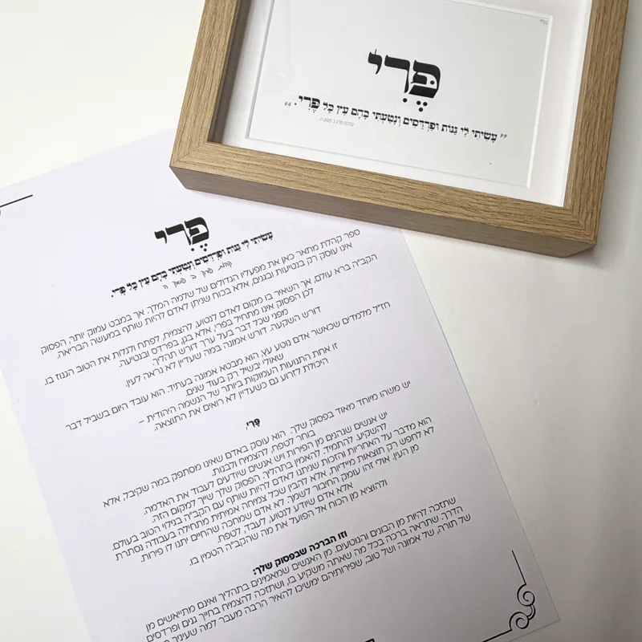
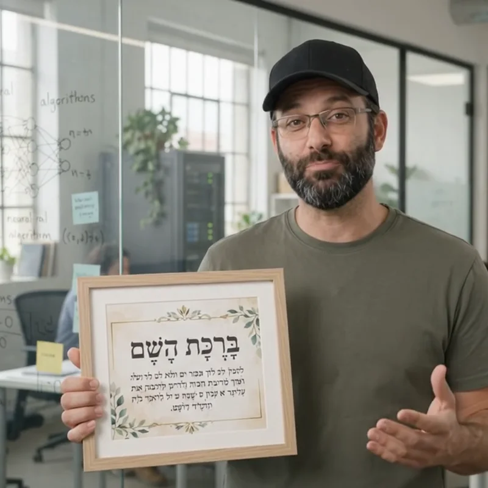

עצמאות מלאה עם כלי ה-AIFull independence with AI tools
הכי חשוב: את יודעת להפעיל לבד את כל הכלים, עם ליווי צמוד בהתחלה.Most important: you know how to run every tool on your own, with close guidance at the start.
עם דויד (צלחיה) אמור יוצאות עם עצמאות מלאה בכלי ה-AI: מפיקות סרטוני פרסום למוצרים שלכן, מעלות אתר לאוויר ובונות אסטרטגיית פרסום 2.0, עם ליווי צמוד בהתחלה ועד שאתן עצמאיות. לא צריך ידע טכני. With David (Tselahya) Amor you leave with full independence with AI tools: you produce ad videos for your own products, put a website live and build an Ads 2.0 strategy, with close guidance at the start and support until you're independent. No technical background needed.
הכי חשוב: את יודעת להפעיל לבד את כל הכלים, עם ליווי צמוד בהתחלה.Most important: you know how to run every tool on your own, with close guidance at the start.
על המוצרים שלך, מוכנים לאינסטגרם, טיקטוק ופייסבוק.Of your own products, ready for Instagram, TikTok and Facebook.
אתר שבנית בעצמך, או שדרוג מלא לאתר הקיים כמו milamila.co.il, עם תוכנית פרסום מודרנית.A site you built yourself, or a full upgrade of your current one like milamila.co.il, with a modern advertising plan.
לכל מפגש יש סרטון משלו. כל מפגש נגמר עם משהו ביד.Each session has its own clip. Every session ends with something in your hands.
שלושה מוצרים מהחנות ״נקודה למחשבה״: הצילום האמיתי, ולידו פריים מסרטון ה-AI שדויד הפיק ממנו.Three products from the “Nekuda LeMachshava” shop: the real photo, and next to it a frame from the AI video David produced from it.

בסדנה: להבת הנר מונפשת, ו-3 גרסאות רילס 9:16 עם קישור לרכישה.In the workshop: the candle flame comes alive, plus 3 vertical 9:16 Reel versions with a link to buy.


בסדנה: תבנית ״הקלף היומי״, קלף מונפש לכל בוקר. 48 קלפים הם 48 ימים של תוכן, מוכן לאישור שלך.In the workshop: a “card of the day” template, one animated card each morning. 48 cards are 48 days of content, ready for your approval.


בסדנה: כלי באתר שמראה ללקוחה תצוגה מקדימה של הפסוק לשם שלה, עם PDF להזמנה.In the workshop: a tool on the site that shows the customer a preview of the verse for her name, with a PDF to order.
האותיות על המוצרים בתוך הסרטונים נוצרו ע״י ה-AI ואינן הטקסט המקורי. בסדנה לומדות להוסיף את הטקסט האמיתי אחרי.The lettering on the products inside the videos was drawn by the AI and is not the original text. In the workshop you learn to add the real text afterwards.
כל משתתפת מקבלת ליווי עד שהיא עצמאית. מי שרוצה לגדול הרבה מעבר לזה, ממשיכה ל-Grow ×10.Every participant gets support until she is independent. Whoever wants to grow far beyond that moves on to Grow ×10.
דויד מציג את עצמו, מהכותל בירושליםDavid introduces himself, from the Kotel in Jerusalem
בין 2016 ל-2020 דויד ניהל סוכנות שיווק אונליין, ואחר כך בנה אימפריית Airbnb בירושלים. עם מעט ידע טכני, הרבה תפילה בכותל ואמונה, הוא בנה מערכת שלמה של אוטומציה ויצירה ב-AI. בקורס הזה הוא נותן לכן את הדרך הקצרה: מה עובד באמת, בסדר הנכון, על העסק שלכן.From 2016 to 2020 David ran an online marketing agency, then built an Airbnb empire in Jerusalem. With little technical background, a lot of prayer at the Kotel and faith, he built a complete AI automation and creation system. In this course he gives you the short path: what really works, in the right order, on your own business.
״התחלתי מאפס בירושלים, עם רקע טכני קטן, הרבה תפילה ואמונה. המטרה שלי היא להעביר לכן את הכוח הזה ב-5 מפגשים ברורים ומעשיים. זה יהיה הקורס הכי יוצא דופן בחיים שלכן.״“I started from zero in Jerusalem, with a small technical background, a lot of prayer and faith. My goal is to hand you that same power in 5 clear, practical sessions. It will be the most extraordinary course of your life.”
1,849 ₪ למפגש לכל הקבוצה יחד (עד 6 משתתפות), לא לכל משתתפת.1,849 ₪ per session for the whole group (up to 6 participants), not per participant.
5 מפגשים של 2.5–3 שעות, בבית הדפוס בבת ים.5 sessions of 2.5–3 hours, at the print studio in Bat Yam.
אופציונלי, בנפרד: Grow ×10, אסטרטגיות הטרמינייטור של דויד לצמיחה, ויראליות ו-scale.Optional, separate: Grow ×10, David's Terminator strategies for growth, virality and scale.
שריינו מקום · וואטסאפ לדוידBook a spot · WhatsApp Davidכן. שני המפגשים הראשונים הם בלי קוד בכלל, עם ליווי צמוד בהתחלה, והקוד בהמשך נכתב בעזרת AI, צעד אחר צעד, על המחשב שלך.Yes. The first two sessions involve no code at all, with close guidance at the start, and later code is written with AI, step by step, on your own computer.
מחשב נייד (נגדיר אותו יחד במפגש 3), טלפון, ותמונות של המוצרים שלך.A laptop (we set it up together in session 3), your phone, and photos of your products.
חלק מהכלים חינמיים ולחלק יש מנוי חודשי. במפגש הראשון בוחרות יחד את הסט שהכי משתלם לעסק שלך.Some tools are free and some have a monthly plan. In the first session we choose together the set that makes most sense for your business.
בבית הדפוס בבת ים. את התאריכים קובעים יחד בוואטסאפ.At the print studio in Bat Yam. Dates are set together on WhatsApp.
עד 6 משתתפות. המחיר הוא 1,849 ₪ למפגש לכל הקבוצה, לא לכל משתתפת.Up to 6 participants. The price is 1,849 ₪ per session for the whole group, not per participant.
הליווי הכלול נמשך עד שאת עצמאית ושולטת במערכות. Grow ×10 הוא מסלול אופציונלי עם אסטרטגיות הטרמינייטור של דויד, למי שרוצה להגדיל את העסק ×5, ×10 ומעלה, עם מפגשים אישיים, קמפיינים ותוכן ויראלי.The included support lasts until you're independent and run the systems yourself. Grow ×10 is an optional track with David's Terminator strategies, for those who want to grow the business ×5, ×10 and beyond, with private sessions, campaigns and viral content.
שולחות הודעה אחת בוואטסאפ, ודויד חוזר אליכן לתיאום.Send one WhatsApp message and David gets back to you to schedule.
DreamNova · the sky is the limit.
וואטסאפ לדויד:WhatsApp David: +972 58 492 1492